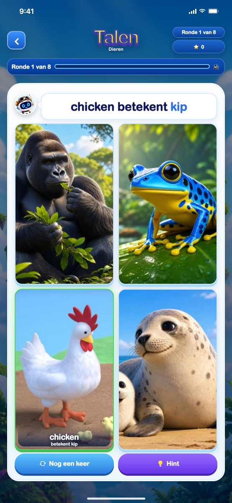

Talen Nieuw
Leer woordjes in een andere taal. Milo zegt een woord, jij tikt op het juiste plaatje, en dan hoor én zie je "chicken betekent kip". Acht thema's van tien woorden: dieren, kleuren, getallen, eten en drinken, lichaam, vervoer, sport en praten, plus een mix. Elke taal kan elke andere leren, en woordjes komen terug tot je ze echt kent. Werkt ook zonder internet.